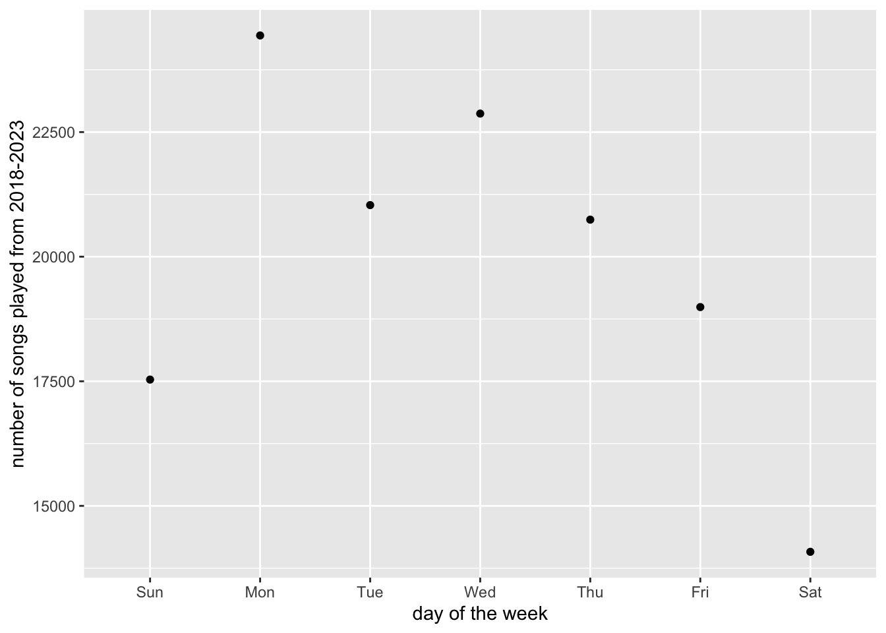

── Attaching packages ─────────────────────────────────────── tidyverse 1.3.2 ──
✔ ggplot2 3.3.6 ✔ purrr 0.3.4
✔ tibble 3.1.7 ✔ dplyr 1.0.9
✔ tidyr 1.2.0 ✔ stringr 1.4.0
✔ readr 2.1.2 ✔ forcats 0.5.1
── Conflicts ────────────────────────────────────────── tidyverse_conflicts() ──
✖ dplyr::filter() masks stats::filter()
✖ dplyr::lag() masks stats::lag()
Attaching package: 'jsonlite'
The following object is masked from 'package:purrr':
flatten
Attaching package: 'lubridate'
The following objects are masked from 'package:base':
date, intersect, setdiff, union
Attaching package: 'plotly'
The following object is masked from 'package:ggplot2':
last_plot
The following object is masked from 'package:stats':
filter
The following object is masked from 'package:graphics':
layoutStatic analysis
After we have imported the libraries we can download the extended data that we gathered from our spotify download. Since all the files I need are .json I use the pattern *json to load them all in at once instead of individually loading them in.
path <- "./my_extended_data/"
files <- dir(path, pattern = "*.json")
data <- read_csv("./my_extended_data/my_data.csv")Rows: 139773 Columns: 8
── Column specification ────────────────────────────────────────────────────────
Delimiter: ","
chr (6): master_metadata_track_name, master_metadata_album_artist_name, mas...
dbl (1): ms_played
dttm (1): ts
ℹ Use `spec()` to retrieve the full column specification for this data.
ℹ Specify the column types or set `show_col_types = FALSE` to quiet this message.To get a better understanding of what all the data fields are make sure to look through the Start Here page
We can also use glimpse to take a quick look at the data to see what type each column is
glimpse(data)Rows: 139,773
Columns: 8
$ ts <dttm> 2020-06-25 13:29:16, 2023-02-06 17:…
$ ms_played <dbl> 1130, 162577, 214493, 60089, 150418,…
$ master_metadata_track_name <chr> "Pray ft. Kameron (Blanke Remix)", "…
$ master_metadata_album_artist_name <chr> "ILLENIUM", "Waterparks", "The Amity…
$ master_metadata_album_album_name <chr> "Pray (ft. Kameron) - Remixes", "FAN…
$ reason_end <chr> "fwdbtn", "trackdone", "trackdone", …
$ reason_start <chr> "fwdbtn", "trackdone", "clickrow", "…
$ spotify_track_uri <chr> "spotify:track:6BzTAVtYRHbEx6gQ1yMwZ…After looking through the columns I want to save the ones that I will be using for the analysis.
spotify_data <- data %>%
select(ts, ms_played, master_metadata_track_name, master_metadata_album_artist_name, master_metadata_album_album_name, reason_start, reason_end)Data Wrangling Date Time & Rename Column
Throughout the semester I learned how important tidy data is. Here we will impliment two of the changes to make this dataframe easier to manage.
Converting a column from char to POSIXct. This will allow for easier data analysis since the column will be of type date. We can use the
lubridateto gain more information.Renaming columns for easier analysis
spotify_data <- spotify_data %>%
as_tibble() %>%
separate(
col = "ts",
into = c("date", "time"),
sep = "T"
) %>%
separate(
col = "time",
into = "time",
sep = "Z"
)Update to POSIX
datetime <- as.POSIXct(paste(spotify_data$date, spotify_data$time), format = "%Y-%m-%d %H:%M:%S")
spotify_data$datetime <- datetimeHere we can check that the change was implimented
spotify_data %>%
select(datetime)# A tibble: 139,773 × 1
datetime
<dttm>
1 2020-06-25 13:29:16
2 2023-02-06 17:29:01
3 2018-11-21 04:38:02
4 2021-06-26 20:02:50
5 2022-07-11 19:57:59
6 2021-03-08 18:55:01
7 2020-04-09 18:23:56
8 2020-11-29 19:29:37
9 2022-11-13 23:39:40
10 2021-03-30 01:00:14
# … with 139,763 more rowsFinally, we just need to rename the columns.
spotify_data <- spotify_data %>%
rename(
"track" = "master_metadata_track_name",
"artist" = "master_metadata_album_artist_name",
"album" = "master_metadata_album_album_name"
)Now that we have cleaned up the data a bit we can move into data exploration and analysis!
Total Songs Played
I’ve used this spotify account since 2018. I know I really enjoy listening to music all the time. The first insight I want to gain is on which day of the week do I listen to the most music.
library(lubridate)
viz <- spotify_data %>%
drop_na(datetime) %>%
mutate(weekday = wday(datetime, label = TRUE)) %>%
group_by(weekday) %>%
count(weekday, na.rm = T) %>%
ggplot(aes(weekday, n)) +
geom_point() +
labs(
x = "day of the week",
y = "number of songs played from 2018-2023",
)It looks like my Monday’s typically consist of a cup of coffee and some music to start my week off right!
total songs played during week plot

Top songs no skip
The analysis for my top 5 tracks tracked every time the song was played. However, just because a song plays doesn’t mean I listened to it all the way through. This plot is for songs I listened to fully.
skipped <- spotify_data %>%
# select(9:11,17,23) %>%
# na.omit() %>%
filter(reason_end == "trackdone") %>%
mutate(year = year(datetime)) %>%
group_by(year, track) %>%
summarise(n = n()) %>%
top_n(n = 5, wt = n)`summarise()` has grouped output by 'year'. You can override using the
`.groups` argument.skipped# A tibble: 41 × 3
# Groups: year [7]
year track n
<dbl> <chr> <int>
1 2018 Care 38
2 2018 Clever 39
3 2018 FEEL NOTHING 49
4 2018 Overthinking 70
5 2018 Set Me Free 46
6 2019 Bow Down 116
7 2019 Crop Circles 79
8 2019 Good Things Fall Apart (with Jon Bellion) 73
9 2019 Head Hunter 85
10 2019 We Own The Night 97
# … with 31 more rowsdone <- ggplot(skipped, aes(fill = track, x = year, y = n)) +
geom_bar(position = "stack", stat = "identity", show.legend = FALSE) +
scale_x_continuous(breaks = c(2018:2023))Visualization
done_plotly <- ggplotly(done + labs(title = "Top 5 Songs Throughout The Years - Track Done")) %>%
layout(showlegend = FALSE)Warning: Removed 11 rows containing missing values (position_stack).done_plotlyHow often did I listen to my top song
Once I filtered by the songs that finished playing without me skipping you can see that my top 5 tracks change throughout the year
My top song in 2019 was Bow Down from I Prevail played a total of 116 times. Which day of the week did I listen to the song the most?
amount_played_2019 <- spotify_data %>%
drop_na(datetime) %>%
mutate(
weekday = wday(datetime, label = TRUE),
year = year(datetime)
) %>%
select(weekday, year, track, datetime) %>%
na.omit() %>%
group_by(track, weekday, year) %>%
count() %>%
filter(track == "Bow Down", year == 2019)amount_played_2019# A tibble: 7 × 4
# Groups: track, weekday, year [7]
track weekday year n
<chr> <ord> <dbl> <int>
1 Bow Down Sun 2019 21
2 Bow Down Mon 2019 36
3 Bow Down Tue 2019 29
4 Bow Down Wed 2019 26
5 Bow Down Thu 2019 23
6 Bow Down Fri 2019 24
7 Bow Down Sat 2019 13This table shows that in 2019 on in total on Mondays I listened to Bow Down the most. Which makes sense becasue I typically went to the gym on monday mornings that yearr.
How many tracks do I skip a year?
After seeing how my top 5 changed when i filtered out by songs that finished. I was curious to see how many songs I skip every year.
skipped_yearly <- spotify_data %>%
mutate(year = year(datetime)) %>%
select(track, reason_end, year) %>%
na.omit() %>%
group_by(year, reason_end) %>%
count()skipped_yearly# A tibble: 60 × 3
# Groups: year, reason_end [60]
year reason_end n
<dbl> <chr> <int>
1 2018 backbtn 117
2 2018 endplay 1141
3 2018 fwdbtn 2678
4 2018 logout 63
5 2018 remote 28
6 2018 trackdone 2969
7 2018 trackerror 6
8 2018 unexpected-exit 5
9 2018 unexpected-exit-while-paused 209
10 2018 unknown 1
# … with 50 more rowsskipped_yearly_plot <- ggplot(data = skipped_yearly, aes(x = year, y = n, fill = reason_end)) +
geom_point()Visualization
This is the rendered graphic showing how the songs I listened to ended throughout the years.
ggplotly(skipped_yearly_plot)Total listening hours
I know I spend a lot of time listening to music so I wanted to visualize this.
year_plot <- spotify_data %>%
mutate(date = date(datetime)) %>%
group_by(date = floor_date(date, "week")) %>%
summarise(total_ms_played = sum(ms_played)) %>%
na.omit() %>%
mutate(
second = (total_ms_played / 1000),
minute = (second / 60),
hours = (minute / 60)
) %>%
ggplot(aes(x = date, y = hours)) +
geom_col(aes(fill = hours)) +
scale_x_date(date_labels = "%b %Y", date_breaks = "12 month") +
scale_fill_gradient(low = "grey", high = "gold") +
labs(title = "Playback hours per week") +
xlab("") +
theme_light()Visualization
The bar graph below shows how many hours a week I spent listening to music.
ggplotly(year_plot + labs(title = "Hours spent listening to music weekly"))I was curious to see what I was doing at that time… I had a couple of road trips so it makes sense that my listening hours were at an all time high!
Breakdown of the amount of songs I listened to that week
Because the highest week I had of listening to music I was curious to see how many songs I listened to each day
week_of_oct <- spotify_data %>%
mutate(date = date(datetime)) %>%
select(ms_played, track, date) %>%
filter(date %in% ymd(c("2020-10-25", "2020-10-26", "2020-10-27", "2020-10-28", "2020-10-29", "2020-10-30", "2020-10-31"))) %>%
group_by(track, date) %>%
mutate(amount_played = n()) %>%
group_by(date) %>%
summarise(
total_play = sum(amount_played)
)week_of_oct_plot <- ggplot(data = week_of_oct, aes(x = date, y = total_play)) +
geom_bar(position = "stack", stat = "identity", show.legend = FALSE) +
scale_x_date(date_labels = "%b %D", date_breaks = "1 day") +
theme(axis.text = element_text(angle = 90, vjust = 0.5, hjust = 1))ggplotly(week_of_oct_plot) %>%
layout(showlegend = FALSE)